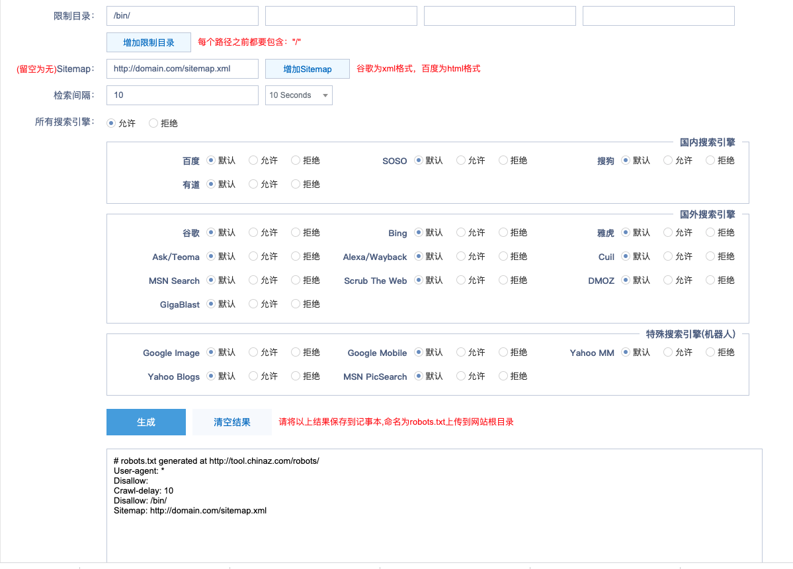
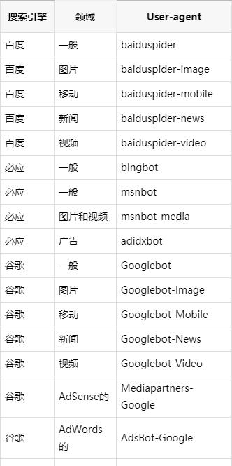

详见地址： http://tool.chinaz.com/robots/

robots.txt文件是告诉搜索引擎在您网站上的页面哪些可以进入哪些不能进入的主要方式之一。所有主要的搜索引擎都支持其提供的基本功能。今天我们的文章将涵盖了robots.txt在网站上使用的所有方式。尽管看起来很简单，但您在网站上犯的任何robots.txt错误都会严重损害您的网站，因此请务必先理解本文再进行实践。
抓取指令
robots.txt文件是一个由搜索引擎蜘蛛读取并遵循严格的语法内容所组成的文本文件。文件的语法很严格，仅因为它必须是计算机可读的。这意味着这里没有错误的余地。
robots.txt文件也称为“机器人排除协议”，是早期搜索引擎蜘蛛开发人员达成共识的结果。它不是任何标准组织制定的官方标准，但是所有主要的搜索引擎都遵守它。
搜索引擎通过抓取页面，跟随链接从站点A到站点B再到站点C的方式对网页进行索引。在搜索引擎搜索遇到新网站时，它将打开该网站的robots.txt文件，该文件告诉搜索引擎允许该站点上的哪些URL进行索引。
搜索引擎通常会缓存robots.txt的内容，但通常会每天刷新几次，因此更改会很快反映出来。
robots.txt文件应始终位于域的根目录。因此，robots.txt文件应位于域名/robots.txt。
robots.txt编写的内容也很重要。内容区分大小写，因此请正确编写，否则将无法使用。
管理抓取预算
众所周知，搜索蜘蛛会以预定的“准则”进入网站，以获取要爬取的页面数（根据网站的权限/大小/声誉得出的抓取页面数）， SEO将此称为抓取预算。这就意味着，如果您阻止网站的某些部分的抓取，搜索蜘蛛就会抓取其他部分来补充页面数。
一般来说，阻止搜索引擎抓取您网站有问题的部分是非常有益，特别是在必须进行大量SEO清理的网站上。整理完所有内容后，您就可以解除阻止。
有关阻止查询参数的说明
特别重要的一种robots.txt应用是：您的站点使用大量参数进行查询。假设您有10个不同的查询参数，每个参数都可能有不同的值而生成不同的URL，这将导致数百甚至数千个毫无意义的URL。阻止所有查询参数页面的抓取将有助于确保搜索引擎仅收录您网站的主要URL，而不会陷入一个巨大陷阱。
此行阻止您网站上包含查询字符串的所有URL：
Disallow:/*？*缺点：不从搜索结果中删除页面
即使您可以使用该robots.txt文件告诉搜索蜘蛛不能在网站上访问的位置，也不能使用它告诉搜索引擎哪些URL不在搜索结果中显示。换句话说，阻止它不会阻止它被索引。搜索引擎仍然会在搜索结果中显示，但不显示其内容。
如果要阻止页面显示在搜索结果中，则需要使用meta robots noindex标签。这意味着，为了找到noindex标签，搜索引擎必须能够访问该页面，因此请不要通过robots.txt阻止搜索蜘蛛访问该页面。
Noindex指令
过去可以在robots.txt中添加“ noindex”指令，从搜索结果中删除网址，并避免出现这些“碎片”。如今已经不再支持，请不要使用。
缺点：不传播链接价值
如果搜索引擎无法抓取页面，则无法在该页面上的链接之间散布链接值。当页面通过robots.txt被阻止时，这是死路一条。任何可能流到（并通过）该页面的链接值都会丢失。
每个指令块的第一位是User-agent，它标识特定的蜘蛛。User-agent字段与该特定Spider（通常更长）的User-agent匹配，因此，例如，来自百度的最常见的Spider具有以下User-agent：
Mozilla/5.0(compatible;Googlebot/2.1;）
因此，如果您想告诉这只蜘蛛做什么，一条相对简单的User-agent: Googlebot就可以解决问题。
大多数搜索引擎都有多个蜘蛛。他们将使用特定的Spider作为其正常索引，广告程序，图像，视频等。
搜索引擎将始终选择他们可以找到的最具体的指令块。假设您有3组指令：一组用于*，一组用于Googlebot和Googlebot-News。如果漫游器由其User-agent来自Googlebot-Video，它将跟随Googlebot restrictions。具有User-agent的漫游器Googlebot-News将使用更具体的Googlebot-News指令。
搜索引擎蜘蛛最常见的User-agent
以下是您可以在robots.txt文件中使用的User-agent列表，以匹配最常用的搜索引擎：

任何指令块中的第二行是Disallow行。您可以有一个或多个这些行，以指定指定的Spider无法访问站点的哪些部分。空Disallow行表示您不Disallow任何操作，因此从根本上讲，它意味着爬虫可以访问您网站的所有部分。
下面的示例将阻止所有“监听”到的搜索引擎robots.txt抓取您的网站。
User-agent:
Disallow:/
下面的示例仅需少一个字符，即可允许所有搜索引擎抓取您的整个网站。
User-agent:
Disallow:
以下示例将阻止Google抓取Photo您网站上的目录及其中的所有内容。
User-agent:googlebot
Disallow:/Photo
这意味着该目录的所有子目录/Photo也不会被扩展。由于这些行区分大小写，因此不会阻止Google抓取/photo目录。
同时含有/Photo的网址也同样会被阻止访问，比如/Photography/。
如何使用通配符/正则表达式
从规范化来说，robots.txt标准不支持正则表达式或通配符，但是，所有主要的搜索引擎都可以理解它。这意味着您可以使用以下行来阻止文件组：
Disallow:/.php
Disallow:/copyrighted-images/.jpg
在上面的示例中，将扩展为它匹配的任何文件名。请注意，该行的其余部分仍然区分大小写，因此上面的第二行不会阻止/copyrighted-images/example.JPG被抓取。
某些搜索引擎（例如Google）允许使用更复杂的正则表达式，但是请注意，某些搜索引擎可能不理解此逻辑。它添加的最有用的功能是$，它指示URL的结尾。在以下示例中，您可以看到它的作用：
Disallow:/.php$
这意味着/index.php无法索引，但/index.php?p=1可以。当然，这仅在非常特定的情况下有用，并且非常危险，请谨慎使用。
非标准robots.txt搜寻指令
除了Disallow和User-agent指令外，您还可以使用其他几个爬网指令。所有搜索引擎爬虫程序都不支持这些指令，因此请确保您了解它们的局限性。
尽管不在最初的“规范”中，对于allow指令大多数搜索引擎都了解它，并且允许使用简单且可读性强的指令，例如：
Disallow:/wp-admin/
Allow:/wp-admin/admin-ajax.php
在没有allow指令的情况下获得的结果就是阻止wp-admin文件夹中的每个文件的抓取。
由Yandex（不受Google支持）支持，该指令可让您决定是否要显示搜索引擎哪个域名。只需像这样指定就可以了：
Host:域名
但是因为仅Yandex支持该host指令，所以我们不建议您依赖该指令，尤其是因为它也不允许您定义协议（到底时http还是https）。一个更好的解决方案，为所有搜索引擎的工作原理是，可以采用301重定向将不常用域名重定向到常用域名上。
Yahoo！，Bing和Yandex都响应crawl-delay指令，这会使抓取变慢。尽管这些搜索引擎在读取指令方面的方式略有不同，但最终结果基本相同。
像下面这样的一行将指示Yahoo! 和Bing会在抓取操作后等待10秒，而Yandex每10秒只会访问您的网站一次。这是语义上的差异，但仍然很有趣。这是示例crawl-delay行：
Crawl-delay:10
使用crawl-delay指令时请务必小心。通过将抓取延迟设置为10秒，您仅允许这些搜索引擎每天访问8,640页。对于小型网站来说，这似乎足够了，但是在大型网站上，它并不是很多。另一方面，如果您网站抓取频繁，那么这是节省带宽的好方法。
使用sitemap指令，您可以告诉搜索引擎-特别是Bing，Yandex和Google在哪里可以找到XML网站地图。当然，您也可以使用各自的网站管理员工具解决方案将XML网站地图提交给每个搜索引擎，我们强烈建议您这样做，因为搜索引擎网站管理员工具程序会为您提供有关网站的许多有价值的信息。如果您不想这样做，则在robots.txt中添加一条sitemap是一个不错的快速选择。
有各种各样的工具可以帮助您验证robots.txt。在进行更改之前，请务必彻底测试您的更改！您将不会是第一个意外使用robots.txt来阻止搜索引擎抓取的人！
理论上说如果网站上没有禁止搜索引擎收录的内容，也就是说整个网站的所有目录或者链接都是允许所有搜索引擎任意抓取，则可以不用设置 robots.txt 文件，或设置为空。
从 SEO 的角度，robots.txt 文件是一定要设置的，网站一定不要省略网站根目录的 robots.txt，即使允许所有搜索引擎任意抓取，那么也应该设置 robots.txt 内容为空，或者使用以下 robot 协议，否则搜索引擎在抓取 robots.txt 文件的时候将会出现 404，也就是文件不存在，是不利于seo的。
User-agent: *
Allow: *[1] http://tool.chinaz.com/robots/: http://tool.chinaz.com/robots/